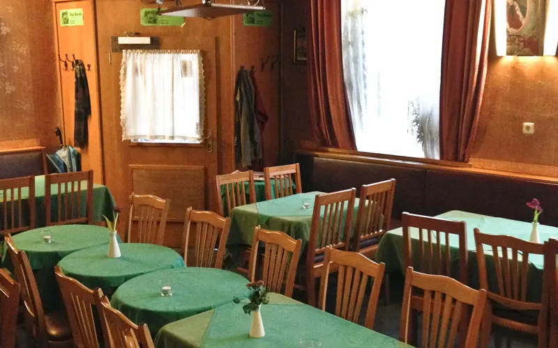

Okay you think Milchbar is way too posh. I got some nice place for you.
The guests play Schafkopf, read the newspaper, discuss things, or devote themselves entirely to the drink in front of them. Eccentrics sit next to conformists, young people next to pensioners, and scruffy types next to the well-heeled. The first arrive early in the afternoon, and the last don’t leave until just before dawn. The café has existed since 1925. The interior has remained largely unchanged for 50 years. Red-upholstered wooden chairs and tables with dark green tablecloths fill the room. A huge photo mural of a kitschy mountain landscape stretches across one of the walls.
They for sure do not have a website:) →
Back